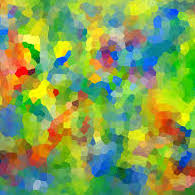

I hope to expand this section soon to include: Flash Cards for learning vocabulary, and perhaps word and reading games.

  <div class="row"> <!-- Row 1 -->
    <div class="col-xs-4">
      
      <h2 class="text-center">Guess The Colour</h2>
      <p class="text-center">Based on the <a href="/resource/2015/11/13/colours-vocab.html">Colours</a> vocabulary list, a simple game to learn the basic colours.</p>
      <p class="text-center"><a class="btn btn-default" href="{{site.baseurl}}/game/guess-the-colour.html" role="button">Play &raquo;</a></p>
    </div>
  </div>